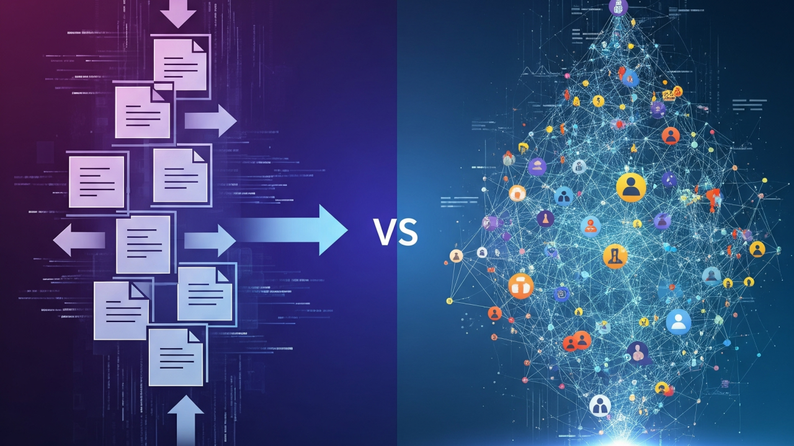
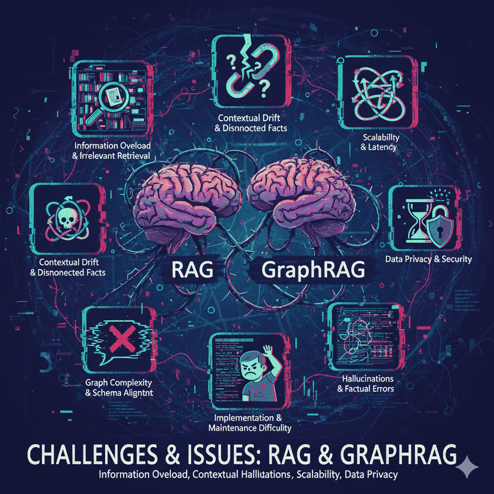

Current state of the LLM based AI retrievals and true cost of them
A worldwide race to adopt large language models (LLMs), has begun and for a very simple reason; AI make things way more efficient whoever a critical challenge has emerged: while these models are powerful, they lack direct access to an organization’s own data and often generate answers that are incomplete, outdated, or simply wrong. This simple yet critical issue has created a strong need for retrieval-based methods, which can help LLMs with real, context-specific information and make them more reliable for business use.

Retrieval-Augmented Generation (RAG) and its graph-enabled variants are emerging as key patterns for enterprise AI. RAG enhances a Large Language Model (LLM) by retrieving relevant documents or data to improve responses while GraphRAG extends RAG by building and using a knowledge graph (KG). Rather than relying purely on vector similarity, GraphRAG answers queries by retrieving relevant subgraphs (entities and relations) from a graph database as context. Another variant called GNN-RAG is a research-stage hybrid that combines Graph Neural Networks (GNNs) with RAG. In one approach (“GNN-RAG”), a GNN reasons over a dense subgraph to select candidate answers, then verbalizes the reasoning path for the LLM to finalize the answer.Industry Adoption & Use Cases
Financial Services such as banks and insurers are actively deploying LLM-augmented systems. GraphRAG is used for risk analysis, uncovering hidden relationships (e.g. fraud rings) and customer intelligence. Standard RAG can gather vast data (transactions, credit history and etc).
Large Healthcare payers and providers use graph and RAG approaches. For example, a U.S. health insurer serving 3.5M members built a Neo4j graph of patient journeys (1.4B nodes, 3B edges) and runs graph algorithms to predict “next best action” for chronic-care. ArangoDB reports using “GraphRAG” for healthcare records: building time-aware graphs of patients, claims, providers to drive a conversational clinician assistant. In one study, this let doctors serve 4 times more patients (from 2,000 to 8,000) by surfacing context-relevant information during visits . GraphRAG in healthcare handles complex, heterogeneous data (EHRs, lab results, genomics, texts) to improve care-coordination, patient Q&A, and fraud detection (e.g. false claims). In pharmacies/biotech, GraphRAG could navigate “drug–disease–gene” graphs (as shown in NVIDIA’s biomedical Q&A example ).
In Insurance, a GraphRAG could link policyholders, claims, hospitals, and agents. A leading insurer used graph analytics (Memgraph) for fraud detection, boosting detection efficiency by 135% and saving “7-figure” losses . Legal/Compliance or Manufacturing/Supply Chain Firms use RAG to search contracts and statutes or alert on new regulations; GraphRAG to map parties, clauses, obligations. GraphRAG can trace product flows (warehouses, shipments) for bottlenecks, or track regulatory compliance in real time or reasons over supplier relationships and IoT data for risk.
Costs (Implementation & Maintenance)
Costs vary hugely with scale. Key cost factors: LLM compute (API fees or custom inference costs), data infrastructure (vector and graph databases), data engineering (cleaning, graph construction), and ongoing maintenance. Some analyses suggest GraphRAG can actually cut costs by reducing reliance on massive vector indexes and model fine-tuning: a study reports GraphRAG approaches reduced LLM implementation costs by up to ~70%, thanks to using existing KG context instead of retraining models . In that case, organizations saw roughly 3 times ROI by avoiding heavy compute for embedding large datasets. However, building and curating a knowledge graph isn’t free — it requires domain modeling and ETL pipelines.
Vendors typically offer cloud-managed graph DB pricing by cluster size. For example, Neo4j Aura cloud nodes start at a few thousand dollars per month (depending on memory/CPU). Additional costs such as embedding hosting (vector DB charges by usage), LLM token charges (GPT-5 is ~$12–$14 per 1m tokens, plus overhead of multiple queries). Maintenance costs include data refresh pipelines and prompt engineering. Smaller companies can start with open-source or pay-as-you-go services; larger enterprises often negotiate enterprise licenses (often six or seven figures annually for a mature graph platform plus AI compute).
Challenges and Issues

- RAG challenges:
- GraphRAG issues:
- GNN-RAG issues:
- Data and Infrastructure issues:
Even with retrieval, LLMs still risk hallucination or bias if context is insufficient. Retrievers may return irrelevant or redundant passages. Performance depends on embedding quality; domain-specific jargon can be missed. Maintaining up-to-date indexes requires continuous ETL. Privacy and access controls are critical when queries tap internal data. Many organizations find they must carefully “ground” LLMs via prompt context or API connectors to avoid unsafe outputs.
GraphRAG adds complexity. Building a comprehensive knowledge graph is labor-intensive: entity extraction, schema design, and linking across siloed systems (databases, documents, logs). Errors in the graph (missing relationships, mis-linked entities) can lead the LLM astray. Graph queries can be slower than vector search for fuzzy matches. Moreover, graph databases traditionally scale less linearly: they work better on complex traversals but can struggle with ultra-high-volume streaming data. ThatDot notes most graph DBs can only handle thousands of events/sec, whereas modern enterprises may need millions of updates per second. As data grows, graph queries with many hops become costlier. Ensuring graph consistency (ACID) and fast replication is harder than with simpler SQL/NoSQL systems. GraphQL/SPARQL/Cypher expertise is a barrier for some teams.
These hybrid methods require significant ML expertise. Training a GNN+LLM on proprietary data is expensive and requires labeled examples or clever unsupervised objectives. Inference is heavier: running a GNN on each query adds latency. Such systems also need large graph storage and careful hyperparameter tuning. They are not yet mature for general enterprise use (mostly academic or pilot projects).
Handling large structured datasets is itself challenging. Enterprises often have data silos (SQL databases, CRMs, data warehouses) that must be unified. Integrating LLMs with structured data demands connectors and data pipelines; e.g. Salesforce stresses the need to “ground” LLMs via APIs into CRM, billing, inventory to give context. This “LLM glue” layer can be a issue. For very large graphs (billions of nodes), specialized distributed graph clusters (e.g. ArangoDB SmartGraphs, TigerGraph’s Fabric) or in-memory solutions (Memgraph, Azure GMS) are needed. These add cost and operational complexity.
Pros and Cons: Techniques and Databases
- Standard RAG (vector-only):
- GraphRAG:
- Graph Neural Networks (GNNs):
- Vector Databases (e.g. Pinecone, Weaviate, Milvus):
- Graph Databases (Neo4j, TigerGraph, ArangoDB, etc.):
For pros we can mention simpler architecture; uses off-the-shelf LLMs and vector stores; effective for unstructured text and retrieval tasks. For cons we can mention lacks of explicit structure; limited in reasoning over facts; opaque results (hard to justify why a piece of text was retrieved). Semantic search can miss context (e.g. “How many tickets?” needs aggregation which vectors can’t do).
For pros we can mention adding structure and reasoning to RAG. Good for multi-hop questions and explainability: one can trace the graph paths that led to an answer. It unifies structured and unstructured data. GraphRAG makes RAG more accurate, explainable and scalable, especially in domains needing trust (healthcare, finance). Cons such as more complex pipeline. Requires building/maintaining a knowledge graph. May involve dual retrieval (graph + vector), complicating orchestration. Performance depends on graph DB optimization.
Pros we can mention powerful for pattern recognition on graphs; can learn embeddings capturing multi-hop interactions. Cons such as high computational cost (multi-layer propagation), lengthy training, not trivial to set up. Lettria notes GNNs require “specialized hardware and prolonged training” and struggle with dynamic graphs.
Pros: Scalable for billions of text embeddings; support approximate nearest neighbor search; often managed cloud services. Easy to add new documents. Cons: Only capture semantic similarity; no support for structured queries or logical relationships. High dimensional index sizes and GPU costs for embedding generation. Without structure, they can’t directly answer queries like “Which accounts are linked via three transactions”.
Pros: Optimized for relationship queries; ACID transactions; often built-in graph algorithms (centrality, pattern matching). Multi-model DBs (Arango, Cosmos DB, OrientDB) can also store documents or key-value data. Graph analytics (Neo4j GDS, Graph Data Science, Memgraph’s MAGE) support advanced AI algorithms on the graph. Cons: Tuning and scaling graphs is tricky. They can be memory-intensive (especially in-memory systems). Writing complex queries (Cypher/Gremlin) has a learning curve. In a survey, Neo4j was chosen by a health insurer mainly for its enterprise features (role-based access, security), implying other graph systems may lack maturity in governance.
Fail and Success Stories
Success:
- Neo4j and Databricks for patient journeys: The health insurer case above.
- ArangoDB in healthcare: “Decoded Health” doctors 4 times throughput with GraphRAG.
- Memgraph fraud detection: 135% better detection, major cost savings.
- NVIDIA’s research: 2× QA accuracy on biomedical domain with GraphRAG.
- Many companies (Gartner predicts >80% by 2025) are piloting LLM+KG solutions in production or staged environments.
Challenges/Failures:
Published failures are rare, but common pitfalls include “hallucinating” chatbots (when RAG is misconfigured), or teams “getting no ROI” because the LLM wasn’t properly grounded. Businesses report that 42% of AI adopters lack the skills or resources to deploy successfully . Common causes of unsuccessful projects: poor data quality, over-hyped expectations, and ignoring domain context. For graph projects, scalability issues can render a solution impractical (e.g. a massive streaming use case may outgrow a static graph database).
Large-Scale Structured Data and LLM Integration
Enterprises often have petabytes of structured data (financial ledgers, EMRs, policy documents). LLMs cannot directly ingest raw tables at scale, so RAG/GraphRAG bridges the gap. Approaches include: (a) indexing table data by converting it into text or embeddings; (b) building a knowledge graph of key entities and facts extracted from tables; © hybrid systems. For example, Althire AI’s framework uses LLMs to extract entities/relations from emails, calendars and documents to build an “activity-centric” knowledge graph for analytics . In practice, companies load relational and semi-structured data into a graph (via ETL or stream processors) and also into vector stores. LLM prompts can query the graph (with natural-language to Cypher layers) or use retrieval.
GraphRAG with big data:
In GraphRAG, structured data (e.g. enterprise warehouses, CRM/ERP records) becomes graph nodes/edges. E.g. modeling a telecom’s network of customers, devices, tickets and technicians lets support AI answer “which devices are at risk given X” by traversing that graph. Handling large-scale graph data demands distributed solutions: ArangoDB shards by key to keep related patient records together, Neo4j clusters via Fabric sharding, and TigerGraph uses parallel compute. The cost of querying a graph of billions of edges can be significant; often only relevant subgraphs (context) are retrieved per query. Maintenance costs include re-encoding data as graphs after changes, which can be mitigated by incremental updates.
Costs of Large-Scale Graph Data Handling
Graph databases often license by memory or nodes: for very large graphs, budgets can easily be millions of dollars per year in hardware/cloud. Cloud graph services charge for storage, compute, and queries. In-memory graph systems (Memgraph, TigerGraph) offer sub-second traversals but require large RAM. The capital and operational costs of streaming graph analytics (as discussed in ThatDot) have led enterprises to develop custom pipelines (Flink/Kafka + graph lookup) at high effort. In RAG, larger data means more chunks to embed and index: vector DB storage grows linearly with data size (billions of embeddings). GraphRAG can offset this by focusing on a cleaner subgraph, but building that graph initially is costly.
However, ROI can be high: as noted, knowledge graph approaches can save implementation cost (avoiding costly LLM retraining), and surveys show most firms adopting AI see net gains. McKinsey estimates GenAI could add $2.6–$4.4 trillion per year in business value globally, suggesting that even expensive deployments can pay off.
Business Benefits by Company Size
- Small companies:
- Medium enterprises:
- Large corporations:
Generative AI levels the playing field. SMBs use LLMs to automate routine tasks (customer emails, data summarization) and get insights without hiring data scientists. In a 2025 survey, 80% of AI-using small businesses reported higher efficiency and productivity; 50% got better data-driven decisions. 53% of small firms now prioritize GenAI , and 93% say AI tools improve savings and profitability . Even without huge data teams, a startup can connect ChatGPT to Google Sheets or QuickBooks and do “ask your data” Q&A cheaply, boosting agility.
Mid-sized firms integrate RAG-based assistants into CRM, BI and support. They benefit from knowledge democratization: rather than queries to overloaded staff, an LLM can answer sales or finance queries on-demand. The cost (in lower analyst headcount or faster decisions) is often recouped quickly. Many midsize companies deploy vector/graph search on their combined internal wikis and databases, reducing time to information.
Large enterprises handle massive, siloed data. LLM+RAG can unlock siloed knowledge: for example, an LLM agent might query the company policy database, legal docs, and customer records to answer regulatory questions. McKinsey notes GenAI value in banking ($200–340B) and retail ($400–660B) annually . Large firms invest in custom “enterprise LLMs” or fine-tuned models, often paying millions in compute, but gain in scale: e.g. a single LLM can summarize terabytes of logs or conduct company-wide insights queries. Overall, generative AI is estimated to boost productivity by tens of percent across sectors .
Conclution
With all that being said we can clearly observe a gap between these technologies. Although technologies such as RAG or GraphRAG offers a huge advantages but we can clearly see they are not perfect and can come with a great cost. Meanwhile the purpose of this article was to introduce a intermediate solution that can feel the gap between a high accuracy and factual GraphRAG and RAG. That’s what MSTAR offer (from angrygraph labs), by building a Concept-Type graph which stands between RAG and GraphRAG, conneting source data to a concept graph to avoid building a full knowledge graph. If you want to know more checkout WEBSITE or wait for the next article.